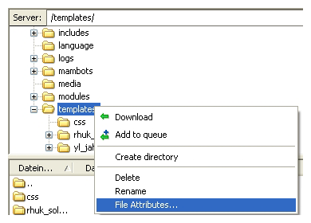
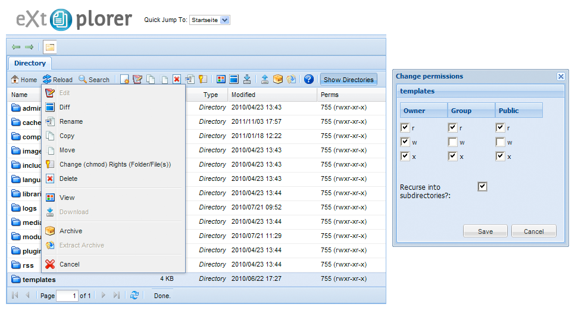

File Permission Issues
This tutorial shows you how to handle permission issues with your Warp theme.
You can't save the theme settings
In order to save the theme settings, make sure the Joomla template directory (/templates/THEMENAME) or WordPress theme directory (/wp-content/themes/THEMENAME) including all subdirectories and files are writable.
For Joomla we use an extra file to be able to save the theme settings from the Joomla template manager, therefore we place a file here: /administrator/templates/system/warp-ajax.php. Please make sure that this directory is writable, then the file will be copied automatically. Also you can do it yourself by copying the /templates/THEMENAME/warp/systems/joomla.1.5/config/elements/warp-ajax.php to /administrator/templates/system/warp-ajax.php using your FTP client.
Permissions are inherited from the parent directory. If you set the specific template directory (e.g. yoo_cloud) and all sub directories/files to the correct permission but the Joomla template directory has lower permissions it will not work. Best way is to alter the permissions of the top level directory. Sometimes the Joomla root directory has too low permissions and you wonder why it is not working...
Always avoid 777 permissions. If your webserver has problems with the CHMOD 755, you can also try 775 and lastely 777 in this order.
Changing File Permissions
So how do you change the permissions for files and directories? Here are two step-by-step guides.
Using your FTP client
- Open your FTP client or if you don't have any download FileZilla and install it.
- Use your FTP client to login to your server and browse to your webroot directory.
- Right click on a directory which you want to change the permissions on and click File Permissions....
- The Change File Attributes dialog, let's you check the options as shown below or type a numeric value like 755. Make sure the Recurse into subdirectories option is checked. Then hit the OK button.

Tip: After applying new permissions some FTP clients require the file view to be refreshed. Otherwise the old permissions will continue to show...
Using a FTP client may also change file ownership to the FTP user of the files/directories you changed the permissions on. This can cause problems on some webservers. To avoid this you can use a Joomla component like eXtplorer to update the permission through the Joomla administration.
Using the eXtplorer Joomla component
- Download eXtplorer file manager Joomla component and install it. It allows you to edit, delete, copy, rename, archive and unpack files/directories directly on your webserver.
- Login to your Joomla administration, go to the eXtplorer component and browse to the directory which you want to change the permissions on.
- Right click on the directory and choose Change Rights
- Check the options as shown below. Make sure the Recurse into subdirectories option is checked. Then hit the Save button.

Useful Links